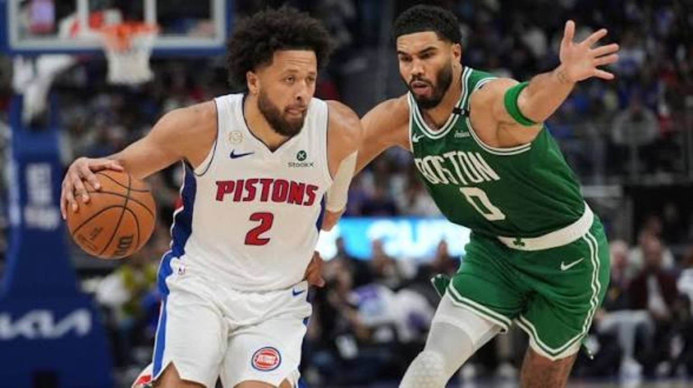
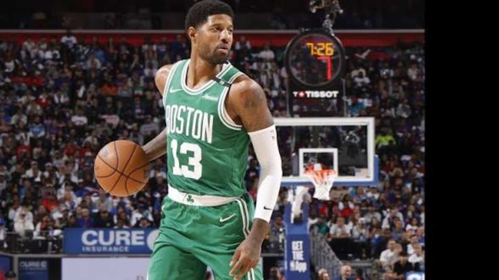
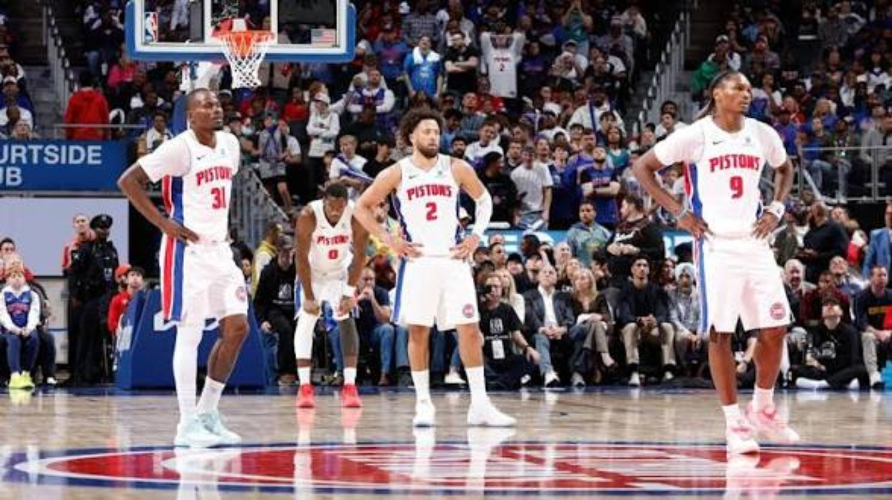
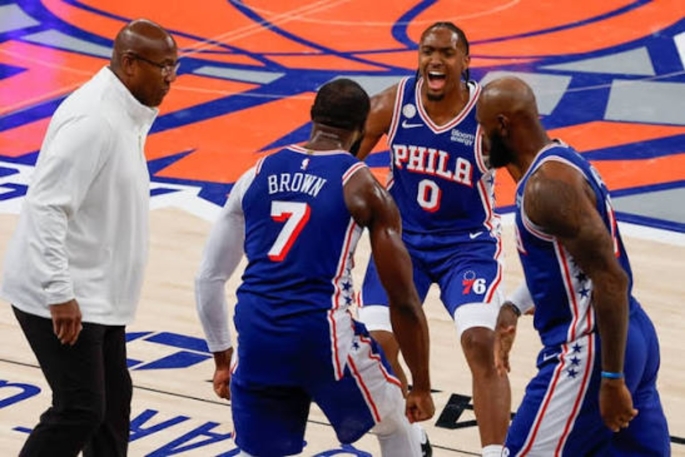
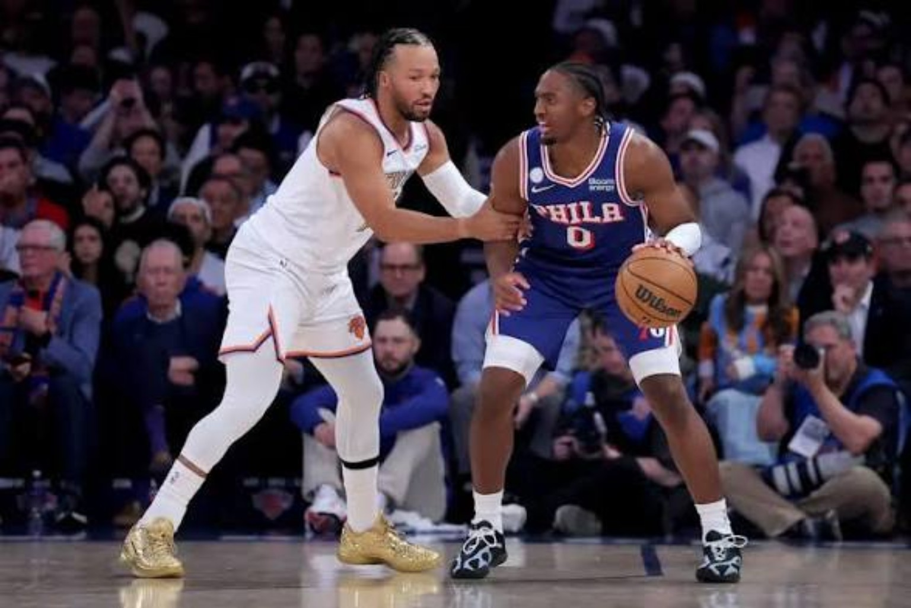
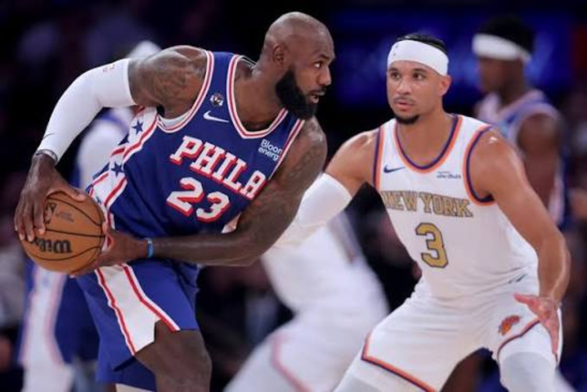
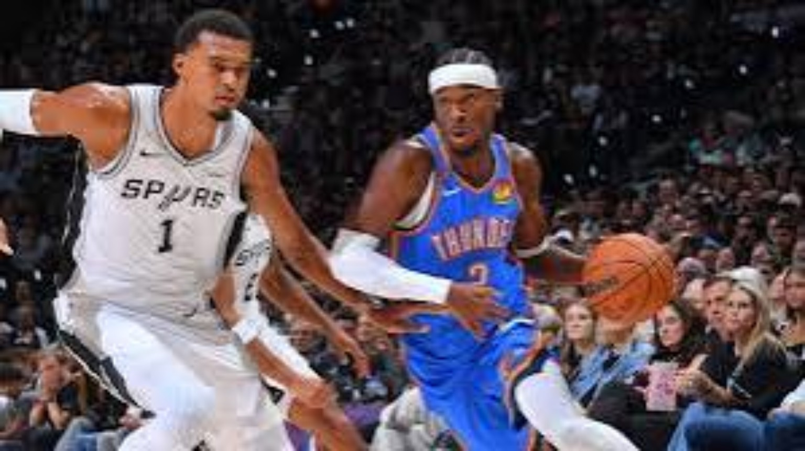
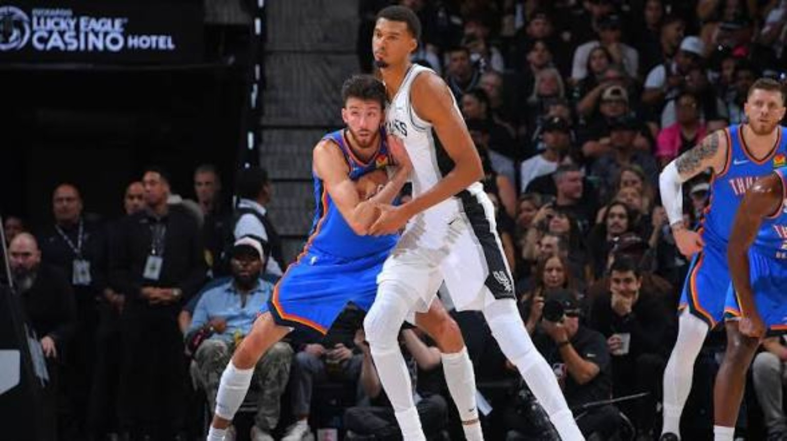
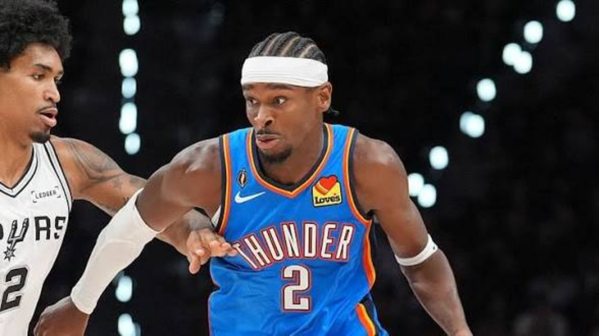
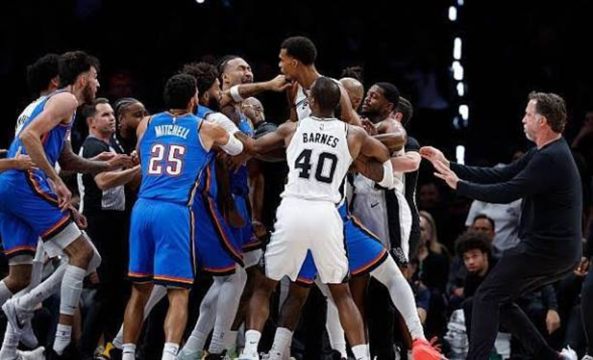

No Favorites.
Just Contenders.
Three games, six contenders, and one clear message: championship reputations mean nothing without execution.
Detroit erased a 22-point deficit against Boston. Philadelphia walked into Madison Square Garden and spoiled New York's championship celebration. Oklahoma City beat San Antonio behind its depth and a disciplined defensive plan against Victor Wembanyama. We aren't deciding the championship race after one night. We're examining what the performances revealed—and which questions these teams must answer next.
Detroit 121, Boston 113



What we learned: Detroit is developing a contender’s mentality
The most revealing part of Detroit's comeback wasn't the deficit itself. It was the Pistons' response. Cade Cunningham continued directing the offense instead of chasing desperate possessions, Jalen Duren provided physicality inside, and the supporting cast helped shift the game's energy. Detroit showed it can withstand an opponent's hot start without abandoning its identity.
That matters in the playoffs, when teams rarely enjoy 48 minutes of comfort. But we also have to be fair: falling behind by 22 is not a formula Detroit can repeat. The Pistons need cleaner first halves, more consistent defensive engagement, and fewer stretches when their offense relies on difficult shots.
Boston: George delivered, but where was the counterpunch?
Paul George's scoring gave Boston an offensive foundation, but when the rhythm changed, the Celtics struggled to create reliable answers. Jayson Tatum's tendency to settle for jumpers was a major concern from our eye test. Tatum can facilitate and still be aggressive; Boston needs both. When George sits or gets into foul trouble, Boston's other creators must keep the offense organized and attacking.
There's no reason to overreact to one collapse, but the film raises questions about ball movement, late-game shot selection, and the balance between individual brilliance and collective offense.
What comes next
Detroit at Miami — Friday, October 23: Can the Pistons defend with urgency from the opening tip? We want to see Duren establish the paint and Cade dictate tempo without needing another dramatic comeback.
New York at Boston — Friday, October 23: Two contenders seeking a response. We're watching Tatum's aggressiveness, Boston's offensive spacing, and how its defense handles Brunson.
Philadelphia 106, New York 100



What we learned: Philadelphia’s ceiling depends on balance
Philadelphia's opening win was encouraging precisely because it didn't require one superstar to carry every possession. Tyrese Maxey attacked, Jaylen Brown supplied another scoring dimension, Joel Embiid drew attention inside, and LeBron James helped connect the offense as a facilitator. Anfernee Simons and Kentavious Caldwell-Pope gave the supporting cast meaningful roles. The chemistry is still developing, but the early willingness to share responsibility was apparent.
We graded the Sixers B+, not an A, because there are still things to tighten up: offensive droughts, rebounding discipline, and how the team handles the ball late in close games. The talent is obvious. The question is whether these players can consistently make each other better.
What we learned: New York will get everybody’s best shot
The defending champions had their celebration, but Philadelphia came to compete. New York's physicality and rebounding helped keep it within reach, and Andre Drummond gave the Knicks a valuable interior contribution. Still, the offense became difficult to sustain late. Jalen Brunson remains a premier creator, but New York cannot live exclusively on his tough-shot making; Karl-Anthony Towns and the supporting cast must be involved in cleaner actions.
Opening night doesn't diminish New York's championship credentials. It does show that every contender will treat the Knicks as a measuring stick.
What comes next
Cleveland at Philadelphia — Thursday, October 22: This is an early test of whether the Sixers can repeat their defensive effort. Watch LeBron's playmaking, Maxey's aggression, and Embiid's interior rhythm.
New York at Boston — Friday, October 23: The Knicks need more connected half-court offense. Can Brunson and Towns punish Boston's defense without becoming predictable?
Oklahoma City 116, San Antonio 104




What we learned: OKC's depth is a championship weapon
Shai Gilgeous-Alexander remains the engine, but the supporting cast helped make this a convincing Thunder performance. Jared McCain's perimeter shooting created problems for San Antonio, while Jalen Williams' return adds another dependable creator and release valve. Chet Holmgren's versatility further complicates the matchup for opponents. Oklahoma City doesn't need the same second option to carry the load every night.
The defensive performance against Wembanyama deserves just as much attention. OKC crowded his opportunities, disrupted his rhythm and forced other Spurs to produce. Holding a player of Wemby's caliber to 1-for-13 shooting isn't something to casually dismiss. And when San Antonio rallied, the Thunder answered. That poise is a significant part of their identity.
The caution: hot first-half three-point shooting is not a nightly guarantee. OKC must still manufacture efficient offense when opponents close out harder and the jumpers stop falling.
What we learned: San Antonio needs time to solve its three-guard equation
Stephon Castle and Dylan Harper provided encouraging offensive contributions, and De'Aaron Fox gives the Spurs a proven veteran creator. We like the decision to experiment with all three rather than limiting Harper simply because he's young. The real work is establishing off-ball roles, dependable spacing, and the right defensive assignments around Wembanyama.
Devin Vassell competed against bigger players in the post, but can those assignments hold up across an entire season? Julian Champagnie offers another lineup option when more size or shooting is needed. A floor-spacing power forward could eventually become a roster priority, but the Spurs shouldn't abandon a promising experiment after one loss.
Wembanyama's six blocks demonstrated that his defensive influence remains enormous even on a difficult offensive night. San Antonio's goal is to give him more room to work while preserving the advantages of its dynamic guards.
What comes next
Denver at Oklahoma City — Thursday, October 22: Nikola Jokić presents a completely different challenge. We're watching the Thunder's rotations, defensive discipline and whether the supporting cast sustains its offensive impact.
Houston at San Antonio — Friday, October 23: Houston's physicality will test the three-guard look. Watch the Spurs' defensive rebounding, Wembanyama's touches, and whether Vassell or Champagnie becomes more important in the forward rotation.
4DK Opening Night Report Card
| Team | Grade | What stood out |
|---|---|---|
| Detroit | A | Resilience and collective response |
| Boston | C− | George’s offense; late-game collapse |
| Philadelphia | B+ | Balanced contributions |
| New York | C+ | Late-game offense needs work |
| Oklahoma City | A | Depth and defense |
| San Antonio | C | Backcourt promise, spacing questions |
Five Questions for the Next Slate
1. Can Detroit establish its identity without needing a comeback? 2. Will Boston find a better Tatum–George balance? 3. Can Philadelphia defend and share the ball with the same purpose? 4. How will Denver challenge OKC's defensive system? 5. Can San Antonio make its three-guard lineup work without compromising Wembanyama's spacing?
The Final Word
Opening night didn't settle the championship race. It reminded us how narrow the margins can be. Detroit showed resolve. Boston exposed a weakness. Philadelphia flashed its potential. New York learned that every opponent will bring its best. Oklahoma City showed why it remains a standard in the West. San Antonio showed that its ceiling is enormous—but that building the right lineup takes work.
Reputations don't win games. Execution does.